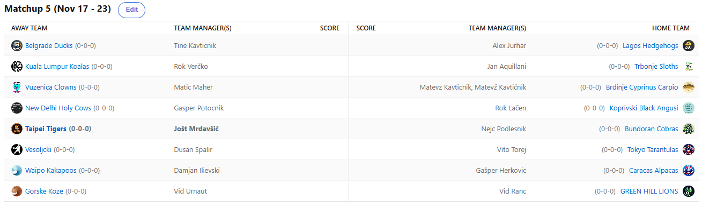

SEZONA 25/26
- Pravila in sistem tekmovanja
- Matchup1 (Oct 21 - Oct 26)
- Matchup2 (Oct 27 - Nov 2)
- Matchup3 (Nov 3 - Nov 9)
- Matchup4 (Nov 10 - Nov 16)
- Matchup5 (Nov 17 - Nov 23)
- Matchup6 (Nov 24 - Nov 30)
- Matchup7 (Dec 1 - Dec 7)
- Matchup8 (Dec 8 - Dec 14)
- Matchup9 (Dec 15 - Dec 21)
- Matchup10 (Dec 22 - Jan 28)
- Matchup11 (Dec 29 - Jan 4)
- Matchup12 (Jan 5 - Jan 11)
- Matchup13 (Jan 12 - Jan 18)
- Matchup14 (Jan 19 - Jan 25)
- Matchup15 (Jan 26 - Feb 1)
- Play-in (Feb 2 - Feb 22)
- Playoff 1 (Feb 23 - Mar 8)
- Playoff 2 (Mar 9 - Mar 22)
- Playoff 3 (Mar 23 - Apr 5)
2025/26 - Fantasy Koroška - sezona 9
MATCHUP 5 (Nov 17 - Nov 23)
Recap: MATCHUP 5
Spremljali smo že peti teden zdaj že ne več tako nove sezone in ponovno sta bili le dve opciji … totalen blowout ali pa popoln nailbiter
do zadnje sekunde. V tednu, ko se je končno nekoliko bolj šparalo s kešom, saj je bilo prvič porabljenih manj kot 225$,
natančneje 151, smo ostali pri kar 3 neporaženih moštvih.
Eden izmed neustavljivih ostaja Ranac. V tem tednu so poskušale Gorske Koze in Triglav Kranj, pa ponovno ne enim in ne drugim ni uspelo. Na krilih vintage Hardna,
ki je z 10 trojkami mimogrede postal tudi pravilen odgovor na predictionih, je namreč Lionse popeljal še do pete zaporedne zmage.
Blizu je sicer bil Urnaut, a tudi tokrat svetovnemu popotniku ni uspelo in naziv najboljšega Vida do nadaljnega pripada Rancu.
Bo Uras ujel pravo formo tudi na Koroškem, ali pa bo moral v želji po kakšni zmagi znova na Japonsko, od koder se je vrnil neporažen?
Čast sophomorjev letos več kot odlično zastopa tudi Vito. Če je na Vranskem potreboval podaljške, pa je bilo daleč od tega v dvoboju z Duletom. Slednji se še naprej ubada
z mnogimi poškodbami in eveyone and their mother is mad, da je Dušan ukradel Joela Embiida g. Jurharju. Njegove nebuloze in
steklenost na čelu moštva iz Carigrada bi namreč poskrbele za precej zabavnih vsebin, med tem ko se Dušan nad njim sploh ne pritožuje
in to celotni zadevi nekako odvzame zabavnost. Vito 5-0 tudi momentalno brez Janisa … kdo ga lahko ustavi?
Podobno se sprašujemo tudi za Cickona. Selitev franšize na obalo je bila več kot uspešna in mediteransko podnebje Shrimpom očitno dobro dene, saj so se ponovno prešetali
do zmage. Najvišji score tedna je bil kar overkill v bitki z Joletovo bolnico, ki se sicer počasi zmanjšuje in zanj kanonfutrček Kavt ne bi mogel
priti ob bolj pravem času. Je pa Jole ta teden vendarle imel opravka vsaj z enim 14-članskim rosterjem, ko je z dirigentsko palico in strogo
disciplino KK2390 s trenerskega stolčka popeljal do rutinirane zmage proti KK Vitanje in če ob tej priložnosti bi si izposodili legendarno izjavo
Roka Lačna: »Ka je pedrajzli, letos pa ne bo sprejema pri župano!?«
Na četrtem mestu pa se nahaja Herko, ki se je zelo oznojil v tem matchupu proti Kakapojem. A na koncu so vendarle izkušnje prevladale … oz. ne, prevladalo je število
acquisitionov, ko je Dili pustil pri miru free agency market cel teden in z 0 proti 4 podpisi izgubil za 7. Vsaka šola nekaj stane
in tale je bila za Damjan zelo draga. Na katerih drogah je Gašper, da je za največ trojk v prejšnjem tednu izbral Tima Hardawayja mlajšega
pa nam žal ni uspelo izvedeti.
Na 5. mestu pa presenetljivo najdemo letos zelo aktivnega Tinki Binkija. Slednji se lahko v tem krogu pohvali z najvišjo zmago, s kar 442 točkami je namreč
odpravil nekonkurenčne in porumplane Corgije. Račke, ki so se letos vendarle izognile pečenju okoli martinovega,
se lahko s 3. zmagami po 5 krogih pohvalijo šele prvič v zgodovini. Pa saj veste kako je, še 4 tetraplegiki bi z Jokičem
postali konkurenčno moštvo in tako je najbrž tudi v tem primeru. Bo povratek Herrona danes Fredu pomagal do zmage, ki bi
bila zdaj že skoraj da nujna?
Poleg Račk pa presenetljivo visoko letijo letos tudi Angusi. Gospod Rok »Osebna Napaka« Lačen je namreč tudi zabeležil že tretjo zmago in je ima zdaj 3x uvod
2-3 in 3x uvod 3-2 v prvih petih krogih. Lani je Lačenovski ugotovil, da ob vseh kuharskih pripomočkih v Audiju ni več prostora za gajbo,
zato se je letos odločil ostati na sredini lestvice vse do konca. Zelo blizu prvi zmagi je prišel Geps, ki mu je zmanjkalo zgolj 7 točk.
Je pa Gašper vsaj porabil svoje signinge in poskušal storiti vse in si nima kaj očitati. Odlična priložnost za prvo zmago pa ga
čaka prihodnji teden, ko se bo v El Shitticu pomeril s Kupsom.
Slednjemu morda delamo krivico, začel je namreč nadpovprečno porumplan in je na prvo zmago čakal 5 tednov. A vendarle, Kups se je s to zmago odlepil od avspuharskega
področja in mu v medsebojnem dvoboju z Gepsom pripisujemo nekoliko več možnosti, da se za 2 zmagi oddalji od Gajbe.
Ob pravem trenutku je naletel na nemočnega Verčka. Lanski prvak, ki so ga Fantasy bogovi ta teden oropali možnosti zmage,
zapisničarji na tekmi Koroške lige pa ene izmed trojk, se trenutne ne nahaja v dobrem položaju in vsaj zaenkrat nič ne kaže,
da bi lahko kot drugi v zgodovini ubranil naslov prvaka. Toda največji šampioni prav v takšnih situacijah pokažejo pravi obraz
in videli bomo iz kakšnega testa je naš Roki.
Ostal nam je le še en snoozefest, ko sta se v dvoboju brez las pomerila Kavt in Maher. Uspešnejši je bil slednji, njegova zmaga pa ni bila pod vprašajem na
nobeni točki tedna. Baje se je Matic samo s tem namenom, da bi lahko v živo zafrkaval Matona celo pripeljal v četrtek na rekreacijo,
a žal tam naših novinarjev ni bilo, da bi lahko to zgodbo potrdili. No, če že kaj drugega ne, pa je Matevžu pripadla nagrada
za najboljši celebration koša v tem tednu. Po tem ko je čebelarja iz Vitanja dodobra skuhal s kombinacijo crossoverjev in stepbacka, je mnogoštevilne
navijače v Športni dvorani Prevalje navdušil še z nekakšnim hibridom Shimmyja in trebušnega plesa. U had to be there, hilarious.
Tudi v 6. tednu Mato do zmage ne more, čaka ga namreč njegov trn v peti.
V 6. tednu nas čaka derbi med Herkom in Rancom, pričakujemo veliko trashtalka med Tinkijem in Veratijem, Matac bo najbrž preslab, da bi upal gobcati v obračunu s
svojim fav drinking buddyjem, vse oči pa bodo uprte v El Shittico, ko se bo vsaj eden izmed tekmecev še bolj oddaljil od avspuharske cone,
kjer župan Matevž čaka na boljše čase.
Ne pozabite na predictione in srečno!
Best memes